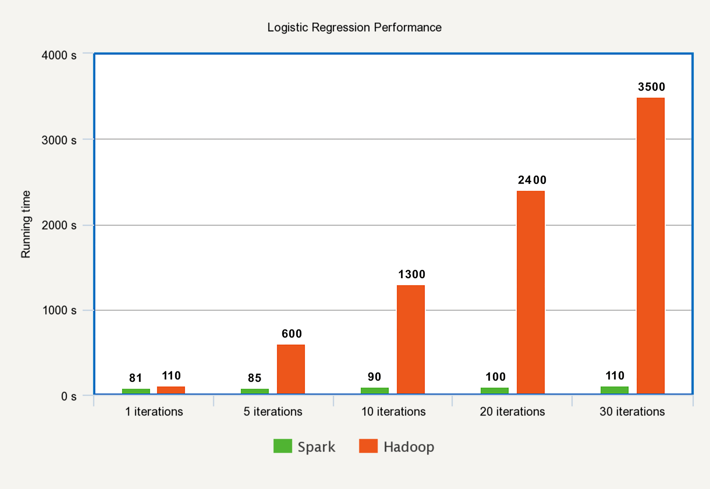
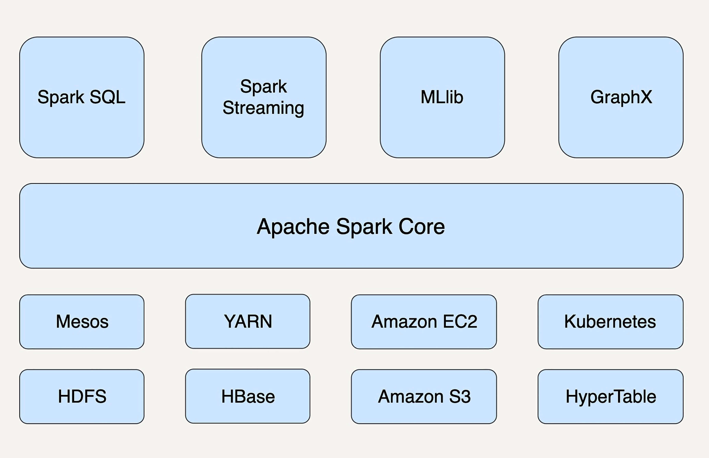

- 00 开篇词 从这里开始，带你走上硅谷一线系统架构师之路.md
- 01 为什么MapReduce会被硅谷一线公司淘汰？.md
- 02 MapReduce后谁主沉浮：怎样设计下一代数据处理技术？.md
- 03 大规模数据处理初体验：怎样实现大型电商热销榜？.md
- 04 分布式系统（上）：学会用服务等级协议SLA来评估你的系统.md
- 05 分布式系统（下）：架构师不得不知的三大指标.md
- 06 如何区分批处理还是流处理？.md
- 07 Workflow设计模式：让你在大规模数据世界中君临天下.md
- 08 发布_订阅模式：流处理架构中的瑞士军刀.md
- 09 CAP定理：三选二，架构师必须学会的取舍.md
- 10 Lambda架构：Twitter亿级实时数据分析架构背后的倚天剑.md
- 11 Kappa架构：利用Kafka锻造的屠龙刀.md
- 12 我们为什么需要Spark？.md
- 13 弹性分布式数据集：Spark大厦的地基（上）.md
- 14 弹性分布式数据集：Spark大厦的地基（下）.md
- 15 Spark SQL：Spark数据查询的利器.md
- 16 Spark Streaming：Spark的实时流计算API.md
- 17 Structured Streaming：如何用DataFrame API进行实时数据分析_.md
- 18 Word Count：从零开始运行你的第一个Spark应用.md
- 19 综合案例实战：处理加州房屋信息，构建线性回归模型.md
- 20 流处理案例实战：分析纽约市出租车载客信息.md
- 21 深入对比Spark与Flink：帮你系统设计两开花.md
- 22 Apache Beam的前世今生.md
- 23 站在Google的肩膀上学习Beam编程模型.md
- 24 PCollection：为什么Beam要如此抽象封装数据？.md
- 25 Transform：Beam数据转换操作的抽象方法.md
- 26 Pipeline：Beam如何抽象多步骤的数据流水线？.md
- 27 Pipeline IO Beam数据中转的设计模式.md
- 28 如何设计创建好一个Beam Pipeline？.md
- 29 如何测试Beam Pipeline？.md
- 30 Apache Beam实战冲刺：Beam如何run everywhere_.md
- 31 WordCount Beam Pipeline实战.md
- 32 Beam Window：打通流处理的任督二脉.md
- 33 横看成岭侧成峰：再战Streaming WordCount.md
- 34 Amazon热销榜Beam Pipeline实战.md
- 35 Facebook游戏实时流处理Beam Pipeline实战（上）.md
- 36 Facebook游戏实时流处理Beam Pipeline实战（下）.md
- 37 5G时代，如何处理超大规模物联网数据.md
- 38 大规模数据处理在深度学习中如何应用？.md
- 39 从SQL到Streaming SQL：突破静态数据查询的次元.md
- 40 大规模数据处理未来之路.md
- FAQ第一期 学习大规模数据处理需要什么基础？.md
- FAQ第三期 Apache Beam基础答疑.md
- FAQ第二期 Spark案例实战答疑.md
- 加油站 Practice makes perfect！.md
- 结束语 世间所有的相遇，都是久别重逢.md
12 我们为什么需要Spark？
你好，我是蔡元楠。
今天我要与你分享的主题是“我们为什么需要Spark”。
也许你之前没有做过大规模数据处理的项目，但是Spark这个词我相信你一定有所耳闻。
Spark是当今最流行的分布式大规模数据处理引擎，被广泛应用在各类大数据处理场景。
2009年，美国加州大学伯克利分校的AMP实验室开发了Spark。2013年，Spark成为Apache软件基金会旗下的孵化项目。
而现在，Spark已经成为了该基金会管理的项目中最活跃的一个。Spark社区也是成长迅速，不仅有数以千计的个人贡献者在不断地开发维护，还有很多大公司也加入了这个开源项目，如Databricks、IBM和华为。
在技术不断高速更迭的程序圈，一个新工具的出现与流行，必然是因为它满足了很大一部分人长期未被满足的需求，或是解决了一个长期让很多人难受的痛点。
所以，在学一个新技术之前，你有必要先了解这门技术出现的意义。这样，你才能更好地理解：它是应用到什么场景的？与同类工具相比，它的优缺点是什么？什么时候用它比其它工具好（或差）？……
至少理解了这些，你才好说自己是真正掌握了这个工具，否则只能说是浅尝辄止，半生不熟。
学习Spark同样是如此。
我们首先要问自己，既然已经有了看似很成熟的Hadoop和MapReduce，为什么我们还需要Spark？它能帮我们解决什么实际问题？相比于MapReduce，它的优势又是什么？
MapReduce的缺陷
MapReduce通过简单的Map和Reduce的抽象提供了一个编程模型，可以在一个由上百台机器组成的集群上并发处理大量的数据集，而把计算细节隐藏起来。各种各样的复杂数据处理都可以分解为Map或Reduce的基本元素。
这样，复杂的数据处理可以分解为由多个Job（包含一个Mapper和一个Reducer）组成的有向无环图（DAG），然后每个Mapper和Reducer放到Hadoop集群上执行，就可以得出结果。
我们在第一讲中讲到过MapReduce被硅谷一线公司淘汰的两大主要原因：高昂的维护成本、时间性能“达不到”用户的期待。不过除此之外，MapReduce还存在诸多局限。
第一，MapReduce模型的抽象层次低，大量的底层逻辑都需要开发者手工完成。
打个比方，写MapReduce的应用就好比用汇编语言去编写一个复杂的游戏。如果你是开发者，你会习惯用汇编语言，还是使用各种高级语言如Java、C++的现有框架呢？
第二，只提供Map和Reduce两个操作。
很多现实的数据处理场景并不适合用这个模型来描述。实现复杂的操作很有技巧性，也会让整个工程变得庞大以及难以维护。
举个例子，两个数据集的Join是很基本而且常用的功能，但是在MapReduce的世界中，需要对这两个数据集做一次Map和Reduce才能得到结果。这样框架对于开发者非常不友好。正如第一讲中提到的，维护一个多任务协调的状态机成本很高，而且可扩展性非常差。
第三，在Hadoop中，每一个Job的计算结果都会存储在HDFS文件存储系统中，所以每一步计算都要进行硬盘的读取和写入，大大增加了系统的延迟。
由于这一原因，MapReduce对于迭代算法的处理性能很差，而且很耗资源。因为迭代的每一步都要对HDFS进行读写，所以每一步都需要差不多的等待时间。
第四，只支持批数据处理，欠缺对流数据处理的支持。
因此，在Hadoop推出后，有很多人想办法对Hadoop进行优化，其中发展到现在最成熟的就是Spark。
接下来，就让我们看一下Spark是如何对上述问题进行优化的。
Spark的优势
Spark最基本的数据抽象叫作弹性分布式数据集（Resilient Distributed Dataset, RDD），它代表一个可以被分区（partition）的只读数据集，它内部可以有很多分区，每个分区又有大量的数据记录（record）。
RDD是Spark最基本的数据结构。Spark定义了很多对RDD的操作。对RDD的任何操作都可以像函数式编程中操作内存中的集合一样直观、简便，使得实现数据处理的代码非常简短高效。这些我们会在这一模块中的后续文章中仔细阐述。
Spark提供了很多对RDD的操作，如Map、Filter、flatMap、groupByKey和Union等等，极大地提升了对各种复杂场景的支持。开发者既不用再绞尽脑汁挖掘MapReduce模型的潜力，也不用维护复杂的MapReduce状态机。
相对于Hadoop的MapReduce会将中间数据存放到硬盘中，Spark会把中间数据缓存在内存中，从而减少了很多由于硬盘读写而导致的延迟，大大加快了处理速度。
Databricks团队曾经做过一个实验，他们用Spark排序一个100TB的静态数据集仅仅用时23分钟。而之前用Hadoop做到的最快记录也用了高达72分钟。此外，Spark还只用了Hadoop所用的计算资源的1/10，耗时只有Hadoop的1/3。
这个例子充分体现出Spark数据处理的最大优势——速度。
在某些需要交互式查询内存数据的场景中，Spark的性能优势更加明显。
根据Databricks团队的结果显示，Spark的处理速度是Hadoop的100倍。即使是对硬盘上的数据进行处理，Spark的性能也达到了Hadoop的10倍。
由于Spark可以把迭代过程中每一步的计算结果都缓存在内存中，所以非常适用于各类迭代算法。
Spark第一次启动时需要把数据载入到内存，之后的迭代可以直接在内存里利用中间结果做不落地的运算。所以，后期的迭代速度快到可以忽略不计。在当今机器学习和人工智能大热的环境下，Spark无疑是更好的数据处理引擎。
下图是在Spark和Hadoop上运行逻辑回归算法的运行时间对比。

可以看出，Hadoop做每一次迭代运算的时间基本相同，而Spark除了第一次载入数据到内存以外，别的迭代时间基本可以忽略。
在任务（task）级别上，Spark的并行机制是多线程模型，而MapReduce是多进程模型。
多进程模型便于细粒度控制每个任务占用的资源，但会消耗较多的启动时间。
而Spark同一节点上的任务以多线程的方式运行在一个JVM进程中，可以带来更快的启动速度、更高的CPU利用率，以及更好的内存共享。
从前文中你可以看出，Spark作为新的分布式数据处理引擎，对MapReduce进行了很多改进，使得性能大大提升，并且更加适用于新时代的数据处理场景。
但是，Spark并不是一个完全替代Hadoop的全新工具。
因为Hadoop还包含了很多组件：
- 数据存储层：分布式文件存储系统HDFS，分布式数据库存储的HBase；
- 数据处理层：进行数据处理的MapReduce，负责集群和资源管理的YARN；
- 数据访问层：Hive、Pig、Mahout……
从狭义上来看，Spark只是MapReduce的替代方案，大部分应用场景中，它还要依赖于HDFS和HBase来存储数据，依赖于YARN来管理集群和资源。
当然，Spark并不是一定要依附于Hadoop才能生存，它还可以运行在Apache Mesos、Kubernetes、standalone等其他云平台上。

此外，作为通用的数据处理平台，Spark有五个主要的扩展库，分别是支持结构化数据的Spark SQL、处理实时数据的Spark Streaming、用于机器学习的MLlib、用于图计算的GraphX、用于统计分析的SparkR。
这些扩展库与Spark核心API高度整合在一起，使得Spark平台可以广泛地应用在不同数据处理场景中。
小结
通过今天的学习，我们了解了Spark相较于MapReduce的主要优势，那就是快、易于开发及维护，和更高的适用性。我们还初步掌握了Spark系统的架构。
MapReduce作为分布式数据处理的开山鼻祖，虽然有很多缺陷，但是它的设计思想不仅没有过时，而且还影响了新的数据处理系统的设计，如Spark、Storm、Presto、Impala等。
Spark并没有全新的理论基础，它是一点点地在工程和学术的结合基础上做出来的。可以说，它站在了Hadoop和MapReduce两个巨人的肩膀上。在这一模块中，我们会对Spark的架构、核心概念、API以及各个扩展库进行深入的讨论，并且结合常见的应用例子进行实战演练，从而帮助你彻底掌握这一当今最流行的数据处理平台。
思考题
你认为有哪些MapReduce的缺点是在Spark框架中依然存在的？用什么思路可以解决？
欢迎你把答案写在留言区，与我和其他同学一起讨论。
如果你觉得有所收获，也欢迎把文章分享给你的朋友。
© 2019 - 2023 Liangliang Lee. Powered by gin and hexo-theme-book.